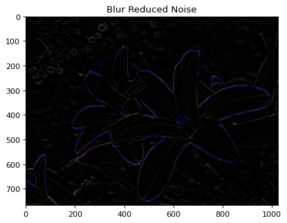

Seminar: Real-time Image Smoothing via Iterative Least Squares
Seminar by Safaa Alnabulsi (safaa.alnabulsi@campus.tu-berlin.de)
Smoothing is a technique in Image processing which is used to reduce noise in Images or to produce a
less pixelated image.
It's an essetinal key which enhances images used in several domains and applications. There are
several
methods and algorithms in the literature which perform smoothing on images e.g. weighted average
based
methods, pyramid based methods, deep learning based methods ..etc
There is a tradeoff between the smoothing quality and the processing speed: the high smoothing
quality
usually requires a high computational cost which leads to the low processing speed.
In this paper, we will see a new global optimization based method, named iterative least squares
(ILS),
for efficient edge-preserving image smoothing with much lower computational cost.
Weighted Average Based Smoothing Methods
Before digging into this paper's enhancements, let's take a look on the results of other smoothing methods which are used in Opencv You will see from the following results the poor quality of smoothing methods performed by weighted average based methods. [2]
Original Image
Results of weighted average based methods
How much noise is reduced?
After taking a look into the reduced noise results performed by each of the filters above, one will notice that most of the important features of the image are subtracted. That is not optimal as one aims to keep the important features of an image while subtracting only unimportant details i.e. noise. This lead us to a conclusion that those methods, regardless of their small execuation time, are not an optimal way to get the results one aspire to.
Averaging - 2D Convolution
Averaging - Blur
Gaussian Filtering
Median Filtering
Bilateral Filtering
Execution Time
| Method | Execution Time |
|---|---|
| Averaging - 2D Convolution | 0.00913 |
| Averaging - Blur | 0.00433 |
| Gaussian Filtering | 0.01631 |
| Median Filtering | 0.00642 |
| Bilateral Filtering | 0.05833 |
Real-time Image Smoothing via Iterative Least Squares
Original Image
After applying ILS
This paper propses a new edge-preserving smoothing method which smoothes out small details in images and preserves the major edges and structures. Among these approaches, two kinds of methods have been widely developed: weighted average based methods and global optimization based methods. [1]
Benefits of ILS
- High-quality results.
- It can produce results with little visible artifacts.
- Lower computational cost.
- The computation of ILS is simple and highly parallel
- The ILS is flexible; it can be modified to handle more applications that require different smoothing properties
Results of ILS
After programming the proposed method in the paper and trying different ways, it was clear that it works really well in preserving edges compared to all upper smoothing methods. You can see below the results of applying Single CPU vs. Parallel CPU using Numpy and Scipy. The image to the right shows the noise reduced by using ILS. It is the result of subtraction the smoothed image from the original one. By simply looking at them, one cannot really find a difference, however, if you go down to ILS execution time section you will notice the difference.
Original Image
This image has bright colors, a bird and a background of leaves and tree branches.
ILS Smoothed Image
The smoothing is very remarkable espically of all the background which contains many leaves. Also the bird's beak
Comparsion between smoothed image using single and parallel CPU
The image resulted of subtracting smoothed images using single cpu and parallel cpu looks completely black which proves that both results are equal. And the only difference is in execuation time. However, by checking the image with code, it wasn't 100% black.
ILS Execution Time
It is clear from the results below that the time of parallel execution is faster than one single CPU. I used two differenlt libraries in parallel cpu: numpy and scipy. The methods in parallel CPU were faster than the one single cpu. From tests performed on different images, it is clear that scipy outperforms numpy in execution time. The execution time itself highly depends on the image itself. For example, in the purble flower image, the execution time decreased %31 when using numpy and %34 when using scipy. Whereas in the yellow bird, it was 50% and 57% in the same order.
| Method | Execution Time - Flower | Execution Time - Bird |
|---|---|---|
| Single CPU | 2.1222 | 1.4464 |
| Parallel CPU with Numpy | 1.4564 | 0.8276 |
| Parallel CPU with Scipy | 1.3981 | 0.7352 |
More Results of ILS
Good results
You see here some examples where the ILS algorithm performed very good and was able to smooth large areas of unnecessary detials while preserving edges of the main shapes.

Medium performance results
You see here some examples where the ILS algorithm performed averagly and was able to smooth some areas of the image but not everything. For example, toy story and the girraffe images could have been smoothed better if we compare them with previous set of images above. Same goes for the rest in this set.

Poor results
You see here some examples where the ILS algorithm performed poorly and failed to reduce the noise. The chosen images like the train, lena actress and the couple are extremely noisy. The ILS algorithm improved them a bit however it couldn't completely remove them. The cow and the hawk images smoothing can be hardly seen. And finally, the corona virus image smoothing effect is trivial.
Code
To prgoram the proposed method in the paper, I used Python along with the following libraries:
- matplotlib: to plot the results of smoothed images
- pillow: a library used in image processing.
- timeit: to measure the execution time of each method and compare it with each other
- cv2: OpenCV library; I used it to compare ILS to other smoothing methods in the literature
- pyfftw: a pythonic wrapper around FFTW. I used it in multithreaded mode with FFT/IFFT.
- scipy: I used it to try out the multi-threaded FFT/IFFT.
- numpy: I used it to try out the single-cpu FFT/IFFT. I also used it to handle the arrays and matrices operations of an image.
Fast Fourier transform
In the following block of code, you will see a function for fft and ifft. The functions take a parameter called "interface"; which allows to calculate fft and ifft in three different ways.def _fft(img, interface='single'): if interface == 'single': out = np.fft.fft2(img,axes=(0,1)) elif interface == 'parallel_numpy': out = pyfftw.interfaces.numpy_fft.fft2(img,axes=(0,1)) elif interface == 'parallel_scipy': out = pyfftw.interfaces.scipy_fftpack.fft2(img,axes=(0,1)) return out def _ifft(img, interface='single'): if interface == 'single': out = np.fft.ifft2(img,axes=(0,1)).real elif interface == 'parallel_numpy': out = pyfftw.interfaces.numpy_fft.ifft2(img,axes=(0,1)).real elif interface == 'parallel_scipy': out = pyfftw.interfaces.scipy_fftpack.ifft2(img,axes=(0,1)).real return outPSF and OTF
- Point spread function (PSF) is impulse response describes the response of an imaging system to a point source or point object. - Optical transfer function (OTF) is defined as the Fourier transform of the point spread function.def psf2otf_Dx(outSize, interface): psf = np.zeros(outSize) psf = psf.astype('float32') psf[0, 0] = -1 psf[0, -1] = 1 otf = _fft(psf, interface) return otf def psf2otf_Dy(outSize, interface): psf = np.zeros(outSize) psf = psf.astype('float32') psf[0, 0] = -1 psf[-1, 0] = 1 otf = _fft(psf, interface) return otfILS Norm
In the code block, you will see the implementation of the ILS method propsed in this paper. It could be mainly split into three sections: - pre-compute: - calculate intermediate variables \mu update, in x-axis and y-axis direction - update the smoothed image Udef ILS_Norm(F,c,lam, interface='single'): N, M, D = F.shape # (768, 1024, 3) sizeI2D = [N, M] # -------------------------------------------------------------------------------------------- # pre-compute otfFx = psf2otf_Dx(sizeI2D,interface) otfFy = psf2otf_Dy(sizeI2D,interface) Denormin = np.abs(otfFx)**2 + np.abs(otfFy)**2 # take the real part and to power of two Denormin = Denormin[:,:, np.newaxis] # add a third axis Denormin = np.repeat(Denormin, D, axis=2) # repeat the same data D=3 times on the third axis=2 denominator = 1 + 0.5 * c * lam * Denormin # -------------------------------------------------------------------------------------------- U = F normin1 = _fft(U, interface) # -------------------------------------------------------------------------------------------- for i in range(4): ## Step 1: eq 7 - Intermediate variables \mu update, in x-axis and y-axis direction # Gradients delta u on x axis and delta u on y axis # image gradient in x direction u_extra_col = (U[:,0,:] - U[:,-1,:])[:,np.newaxis,:] u_extra_row = (U[0,:,:] - U[-1,:,:])[np.newaxis,:,:] u_h = np.hstack((np.diff(U,1,1), u_extra_col)) u_v = np.vstack((np.diff(U,1,0), u_extra_row)) mu_h = c * u_h - p * u_h * (u_h * u_h + eps)**gamma mu_v = c * u_v - p * u_v * (u_v * u_v + eps)**gamma ### ---------------------------------------------------------------------------- ## ## Step 2: eq 9 - Update the smoothed image U # The diff causes loss in one columns extra_col = (mu_h[:,-1,:] - mu_h[:, 0,:])[:,np.newaxis,:] extra_row = (mu_v[-1,:,:] - mu_v[0,:,:])[np.newaxis,:,:] # we calculate the diff - the inverse first order derivative of μxn along x-axis & μyn along y-axis normin2_h = np.hstack((extra_col , - np.diff(mu_h,1,1))) normin2_v = np.vstack((extra_row , - np.diff(mu_v,1,0))) fft_normin_h_v = _fft(normin2_h + normin2_v, interface) numerator = normin1 + 0.5 * lam * fft_normin_h_v FU = numerator / denominator U = _ifft(FU, interface) # U = np.abs(ifft2(FU,axes=(0,1))) normin1 = FU return UThe previous method is applied with the following intial values:# Constants lam = 1 k = 5 p = 0.8 eps = 0.0001 gamma = 0.5 * p - 1 c = p * eps**gamma F = read_image('flower.png')Finally, the method is called for single-cpu as following:start = timer() smoothed1 = ILS_Norm(F,c,lam,interface='single') print("ILS_Norm CPU Single:", timer()-start) show_image(F, smoothed1,t='Smoothed Image Single CPU')And it is called for parallel-cpu (numpy) as following:start = timer() smoothed2 = ILS_Norm(F,c,lam, interface='parallel_numpy') print("ILS_Norm CPU Parallel Numpy:", timer()-start) show_image(F, smoothed2,t='Smoothed Image Parallel Numpy')And it is called for parallel-cpu (scipy) as following:start = timer() smoothed3 = ILS_Norm(F,c,lam,interface='parallel_scipy') print("ILS_Norm CPU Parallel Scipy:", timer()-start) show_image(F, smoothed3,t='Smoothed Image Parallel Scipy')To read an image and normalize its values between zero and onedef read_image(image_fulll_path): image = Image.open(image_fulll_path) # read the image using PIL im = np.asarray(image) # convert the image into numpy array info = np.iinfo(im.dtype) # get the data type of the input image F = im.astype('float32') / info.max # divide all values by the largest possible value in the datatype return FPlotting the images:# normalize two images and subtract them def get_reduced_noise_image(original, smoothed): smoothed= np.int32(smoothed) original= np.int32(original) return original - smoothed # plot reduced noise of two images def show_reduced_noise(original, smoothed, t): fig = plt.figure(figsize=(20, 16), dpi=80) ax3 = fig.add_subplot(3,3,1) reduced_noise = get_reduced_noise_image(original, smoothed) ax3.imshow(reduced_noise) ax3.set_title(t) plt.show() # plot one image def show_single_image(img, t=''): plt.figure() plt.imshow(img) plt.title(t) # plot three images side by side: Origninal, smoothed and the reduced noise def show_image(original, smoothed, t): fig = plt.figure(figsize=(20, 16), dpi=80) ax1 = fig.add_subplot(3,3,1) ax1.imshow(original) ax1.set_title('Original Image') ax2 = fig.add_subplot(3,3,2) ax2.imshow(smoothed) ax2.set_title(t) reduced_noise = get_reduced_noise_image(original, smoothed) ax3 = fig.add_subplot(3,3,3) ax3.imshow(reduced_noise) ax3.set_title('Reduced Noise') plt.show()
Math
Objective Function
ILS problem
The first equation; eq-7 which calculates the intermediate variables
The second equation, eq-9 which calculates the ILS problem
References
- [1] Wei Liu and Pingping Zhang and Xiaolin Huang and Jie Yang and Chunhua Shen and Ian Reid, Real-time Image Smoothing via Iterative Least Squares, presented at SIGGRAPH 2020, 2020.
- [2] Smoothing Images in OpenCV